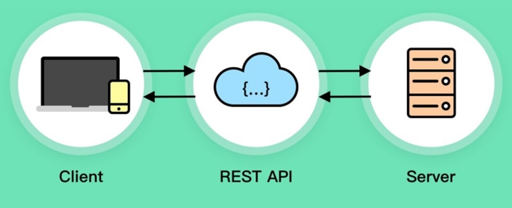
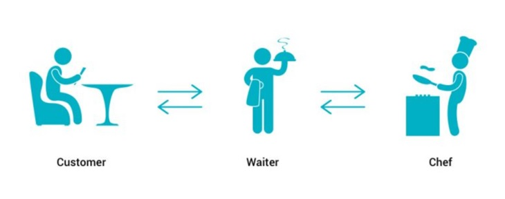

REST API
--------
REST: Representational State Transfer
API: Application Programming Interface

A set of rules for communicating with the server.
The URL to connect with the server must be properly formed.
1. Client: Makes a request according to the REST API rules (menu).
2. REST API: Sends the request in a way the server understands.
3. Server: Processes the request.
4. REST API: Delivers the response (stringified object).
REST API analogy
----------------

1. Customer: Requests a meal from the menu.
2. Waiter: Writes the request in a way the chef understands.
3. Chef: Processes the request by cooking the meal.
4. Waiter: Responds by delivering the meal.